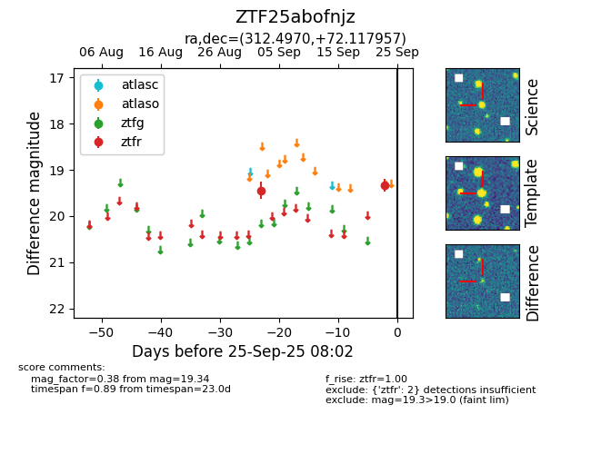

FINK: ZTF25abofnjz
Lasair: ZTF25abofnjz
ALeRCE: ZTF25abofnjz
ZTF25abofnjz (ztf,fink)
equatorial (ra, dec) = (312.4970,+72.11796)
galactic (l, b) = (106.6918,+17.38652)

last ztfr=19.34
2 ztfr detections